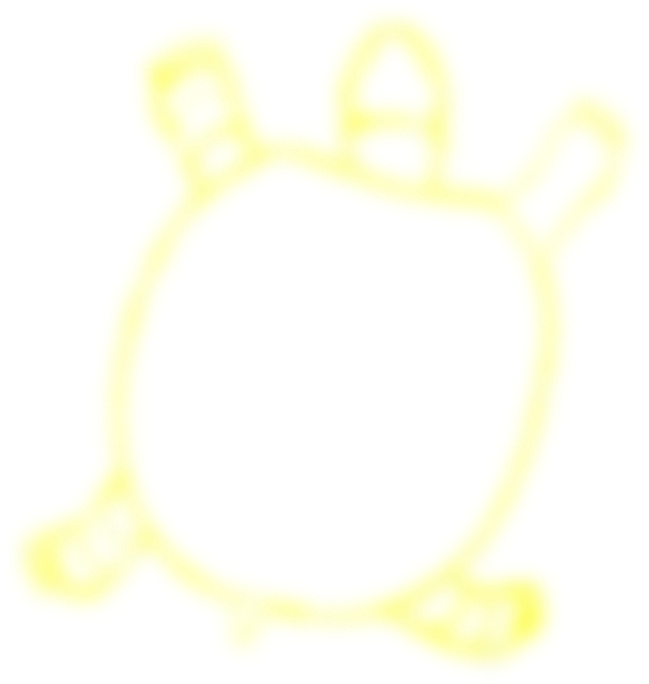

Aesthetics
will change,
Values may remain
the same.
Do you
value time?
Pressure
to produce
will remain.
A complete work
of art must not
be produced
in two days.
We mustn’t
rush the process strictly for show.
Something left
out, perhaps no
one will know?
Why spend any time,
if not at full?
With ample care,
research and
time, a flower
can grow.
What will you discover, if no attention is paid?
The piece that
is looked over, scrolled over.
What did it say?
What if it could change how it exists today?
Well, how would you know, if no attention is paid?
How would
you know,
if you think
that time
is a waste?
Trust in the process.
Clarity will
present itself.
Avoid resisting
the change, open your mind.
Allow for
more space.

Manifesto
Julia Straley
Adressing
the importance of
the research and experimental stages in
a design process, where
one should defy the
pressure to perform.
Embracing
slowness, attention
to detail, and
conceptual thinking.